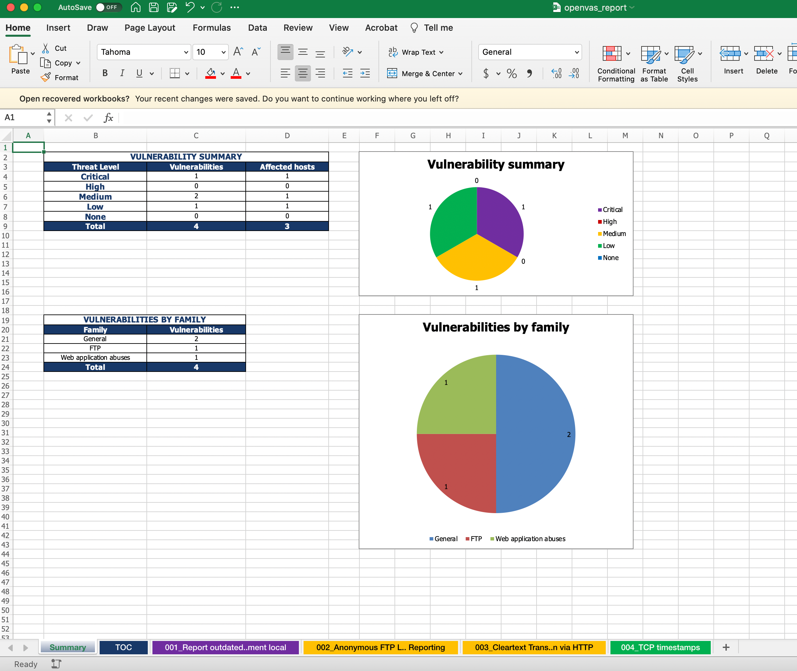

OpenVAS
OpenVAS (Open Vulnerability Assessment System) is a powerful open-source vulnerability scanner and management tool. It is widely used for vulnerability assessments and penetration testing. This guide covers everything from installation to advanced usage of OpenVAS in penetration testing.
1. Introduction to OpenVAS
OpenVAS is part of the Greenbone Vulnerability Management (GVM) framework. It provides tools for scanning and identifying vulnerabilities in systems, networks, and web applications.
Key Features:
-
Comprehensive vulnerability scanning
-
Regularly updated vulnerability database
-
Integration with other tools for advanced penetration testing
2. Installation
Prerequisites:
-
Linux distribution (e.g., Ubuntu, Debian, or Kali Linux)
-
Minimum 2 CPU cores and 4GB RAM (recommended)
-
Root or sudo access
Step-by-Step Installation on Ubuntu/Debian:
-
Update the System:
-
Add OpenVAS Repository (if not pre-installed):
-
Install OpenVAS:
-
Setup OpenVAS:
The setup process may take some time as it updates the vulnerability database.
-
Start OpenVAS Services:
-
Access the Web Interface:
-
Open your browser and navigate to
https://<your-ip>:9392. -
Use the default credentials (admin/admin) or those generated during setup.
-
Common Troubleshooting:
-
Check logs for issues:
3. Basic Usage
3.1 Navigating the Web Interface:
-
Dashboard: Overview of scans, tasks, and vulnerabilities.
-
Tasks: Manage and schedule vulnerability scans.
-
Reports: View detailed scan results.
3.2 Performing a Basic Scan:
-
Go to the Scans tab and select Tasks.
-
Click New Task and configure the target IP or range.
-
Select a scan profile (e.g., Full and Fast).
-
Start the scan and monitor its progress in real-time.
3.3 Interpreting Scan Results:
-
Critical: High-risk vulnerabilities requiring immediate attention.
-
High: Exploitable vulnerabilities with significant risk.
-
Medium/Low: Lesser impact but should still be addressed.
4. Advanced Configuration
4.1 Creating Custom Scan Configurations:
-
Navigate to Configuration > Scan Configs.
-
Clone an existing scan profile and modify settings, such as:
-
Specific ports or services to scan
-
Enabling/disabling certain NVTs (Network Vulnerability Tests)
-
4.2 Managing Targets:
-
Go to Configuration > Targets.
-
Add multiple IP ranges, exclude certain hosts, or define custom settings like credentials for authenticated scans.
4.3 Credentialed Scanning:
-
Provides deeper insights by authenticating into systems.
-
Add credentials under Configuration > Credentials.
-
Types: SSH, SMB, or web application credentials.
-
Assign them to specific targets.
-
5. Integration with Other Tools
5.1 Exporting Scan Results:
- Export reports in formats like XML, PDF, or CSV for further analysis.
5.2 Integration with Metasploit:
-
Export vulnerabilities from OpenVAS.
-
Import them into Metasploit for targeted exploitation:
5.3 Automation with Scripts:
Use Python scripts and the gvm-tools package to automate tasks like:
-
Scheduling scans
-
Fetching reports
Install gvm-tools:
Example Script:
from gvm.connections import TLSConnection
from gvm.protocols.gmp import Gmp
with TLSConnection(hostname='localhost') as connection:
with Gmp(connection) as gmp:
gmp.authenticate(username='admin', password='password')
tasks = gmp.get_tasks()
print(tasks)
6. Advanced Penetration Testing with OpenVAS
6.1 Exploiting Identified Vulnerabilities:
-
Use OpenVAS reports to identify critical vulnerabilities.
-
Verify findings manually or with tools like:
-
Metasploit
-
Burp Suite
-
6.2 Testing Web Applications:
-
Use OpenVAS for reconnaissance and combine it with:
-
OWASP ZAP for dynamic analysis.
-
Nikto for web server testing.
-
6.3 Network Penetration Testing:
-
Perform network mapping and identify open ports using OpenVAS.
-
Use tools like Nmap to validate findings and explore further.
7. Best Practices
7.1 Regular Updates:
-
Update the vulnerability database frequently:
7.2 Fine-tune Scan Configurations:
-
Avoid overloading the network by scheduling scans during non-peak hours.
-
Test scan configurations in a lab environment before deploying.
7.3 Validate Results:
- Not all reported vulnerabilities are exploitable. Validate them with manual testing or secondary tools.
7.4 Compliance and Reporting:
- Use OpenVAS reports to demonstrate compliance with standards like PCI DSS, HIPAA, or ISO 27001.
Reporting
- The following will generate the report in the excel file 
8. Conclusion
OpenVAS is a versatile tool for vulnerability assessment and penetration testing. By combining it with manual techniques and other tools, you can significantly enhance your security testing capabilities. With regular updates and fine-tuned configurations, OpenVAS can serve as a cornerstone for any security professionals toolkit.